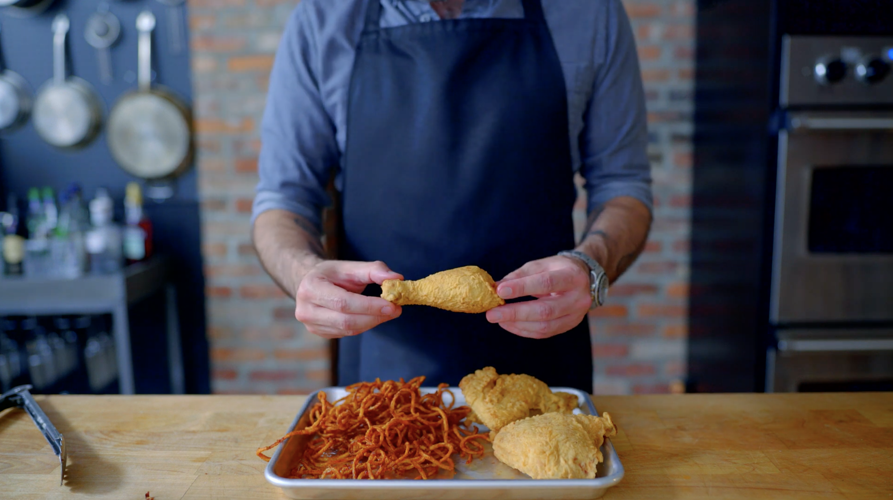

Los Pollos Hermanos from Breaking Bad

Babish recreates a meal from one of TV's greatest shows.
Ingredients
Chicken & Spice Brine
- 15 g cayenne pepper
- 10 g aleppo pepper
- 10 g ground coriander
- 15 g red pepper flakes, ground
- 15 g kosher salt (add for dry brine)
- 1 whole chicken
- Frying oil
- Flour
Chicken Batter
- 100 g all-purpose flour
- 100 g cornstarch
- Sprinkle spice mixture
- 250 g water
- 30 g vodka
- 2 large eggs
Fries & Batter
- 2 russet potatoes, spiralized
- Boiling water
- 15 g paprika
- 60 g all-purpose flour
- 15 g cayenne pepper
- 6 g onion powder
- Kosher salt
- 3 Tbsp spice mixture
- 150 g water
- 1 quart peanut oil
Instructions
Chicken
- Into a small bowl, combine 15 grams of cayenne pepper, 10 grams each of Aleppo pepper and ground coriander, and 15 grams of red pepper flakes that have been ground in a spice grinder. Whisk to combine.
- Set aside 3 tablespoons for the curly fries. Turn the rest into a dry brine for the chicken by adding 15 grams of kosher salt. Whisk to combine.
- Using 1 whole chicken, cut into the classic 10 piece fried chicken pieces.
- Load the pieces onto a wire rack set in a rimmed baking sheet and generously sprinkle on all sides with the dry-brine mixture. Place in the fridge uncovered for 4-24 hours.
- For the batter, in a medium bowl combine 100 grams each of all-purpose flour and cornstarch, an optional sprinkle of the spice mixture, 250 grams of water, 30 grams of vodka, and 2 large eggs. Whisk together until a pancake batter consistency is reached. Cover and refrigerate for a couple of hours.
- Using the batter, along with a pie pan of flour, dunk each piece of chicken into the flour followed by the batter making sure each piece is thoroughly coated. Rinse and repeat for all chicken pieces.
- In a 375°F pot of frying oil, carefully place the chicken pieces into the oil (facing away from you, no splashes!) and frying 7-10 minutes depending on the size of the piece. Turn every other minute or so to make sure no scorching is developing. Once golden brown and 175-185°F for dark meat, 165°F for white meat, remove.
- Drain and cool on a paper towel-lined baking sheet before serving.
Curly Fries
- Using a spiralizer, lock in 1 russet potato, and over a bowl of boiling water begin spiralizing the potato. Rinse and repeat with remaining potatoes. Make sure all the potato twists are underwater.
- Let sit for 15 minutes then drain.
- Once drained, dump the potatoes onto a paper towel-lined baking tray and sandwich between paper towels and pat until as dry as possible.
- After the potatoes are fully dry, grab some scissors and cut the potatoes into shorter pieces. Not too long, but not too short due to curling up in the frying oil.
- Once the potatoes have been snipped, place back onto the baking sheet covering with a paper towel while the batter is made.
- Into a large bowl, combine 15 grams of paprika, 60 grams of all-purpose flour, 15 grams of cayenne pepper, 6 grams of onion powder, and a tiny pinch of kosher salt. Add in the reserved spice blend and whisk to combine.
- Add in 150 grams of water (or however much is required) and whisk together until a little lighter than the consistency of paint.
- Once the right consistency is reached, dump in the potatoes and give them a toss until thoroughly coated and battered.
- In a cast-iron skillet filled with 1 quart of peanut oil heated to 350°F, carefully and gently lower the fries into the oil in batches and spread out evenly and fry for 2-5 minutes until a deep reddish-brown.
- Remove and drain on a paper towel-lined baking sheet and generously season with kosher salt while still warm.